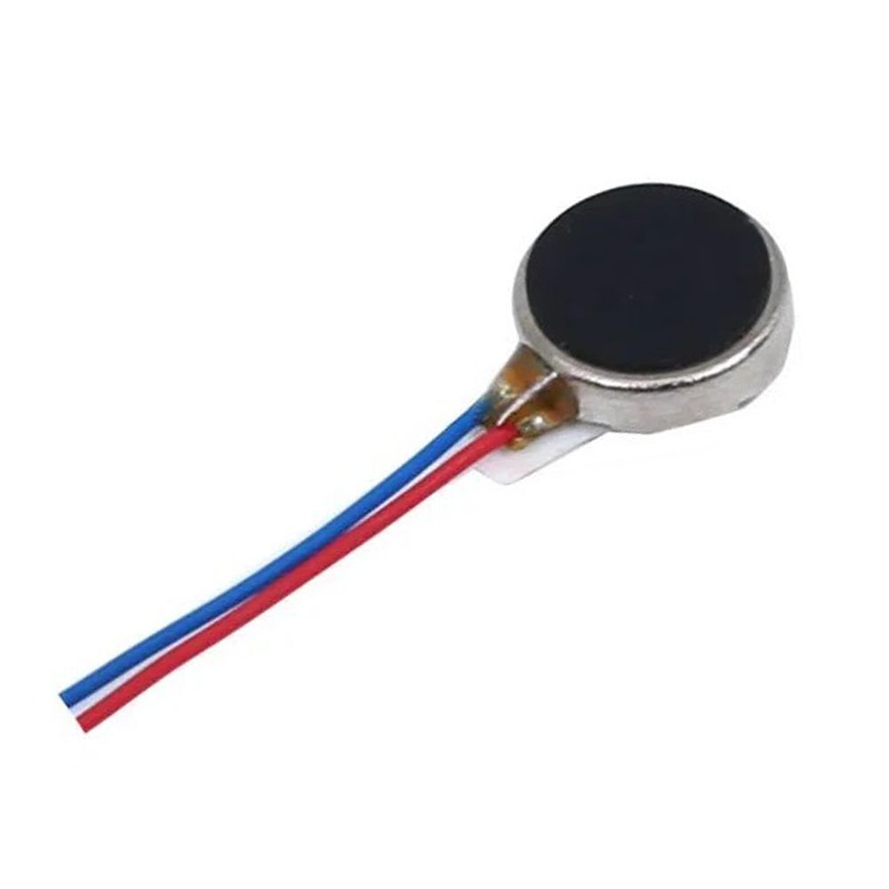

Coin Vibration Motor

🔧 Basic Information
- Name: Coin Vibration Motor
- Also Known As: Pancake motor, Flat vibration motor
- Function: Provides vibration feedback by rotating an off-center mass
- Common Use: Phones, wearables, handheld devices, Arduino/DIY projects
⚡ Electrical Characteristics
- Rated Voltage: 3V DC (can operate between 2V–5V depending on model)
- Typical Current Draw: ~80–100 mA
- Starting Voltage: ~2V
- Speed: ~12,000 RPM at 3V
- Vibration Force: ~0.5 G to 1.2 G (depends on mass and motor size)
📏 Physical Specifications
- Shape: Circular (coin-like)
- Diameter: ~10mm–12mm
- Thickness: ~3mm–4mm
- Weight: ~1.5g
- Wires: 2 thin leads (Red = +, Black = –)
⚙️ Features
- Flat and compact – ideal for slim enclosures
- Adhesive backing – stick directly to surfaces
- Sealed design – dustproof and more durable
- No exposed moving parts – safer in enclosed electronics
🧱 Common Applications
- Silent alerts in phones & smartwatches
- Haptic feedback in controllers
- Arduino projects for silent alerts or fun effects
- Notification systems for hearing-impaired users
⚠️ Usage Tips
- Use transistor or MOSFET (e.g., 2N2222) to control it via Arduino
- Don't connect directly to Arduino GPIO (draws too much current)
- Consider using PWM to control vibration intensity
- Add a flyback diode (like 1N4007) to protect your circuit
← Back to Components